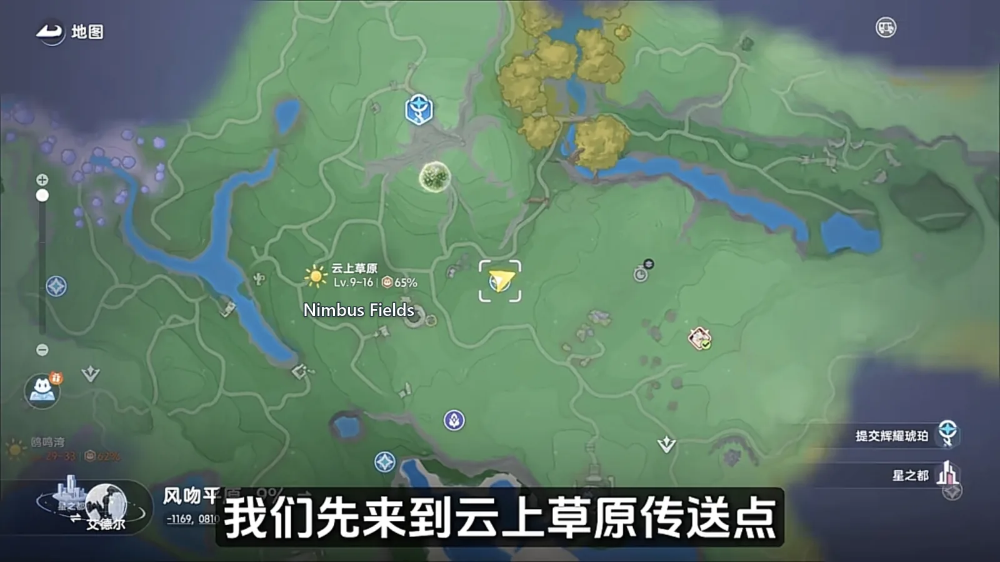
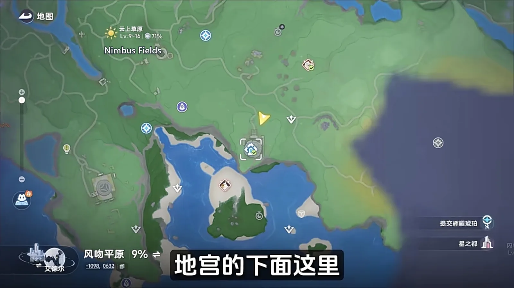
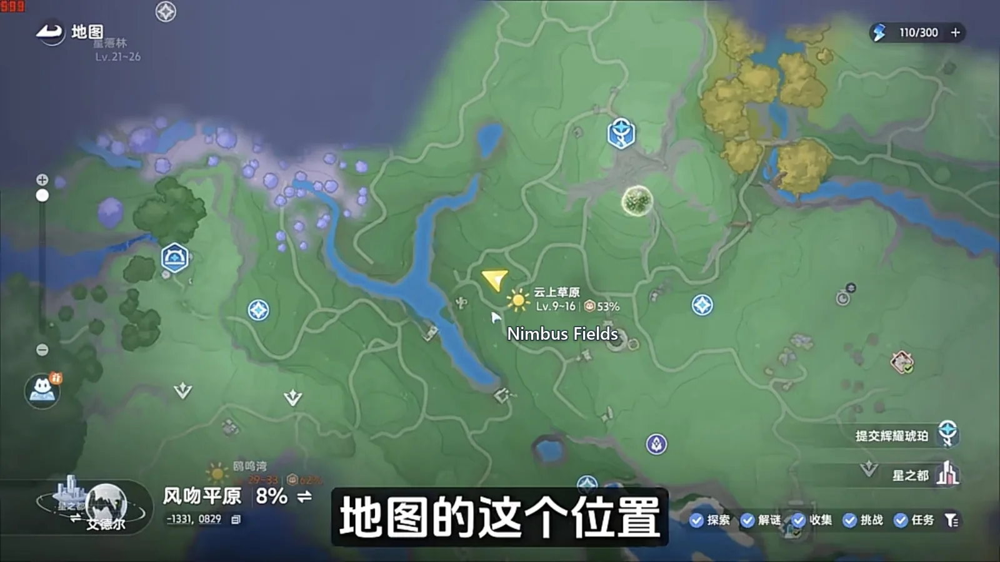
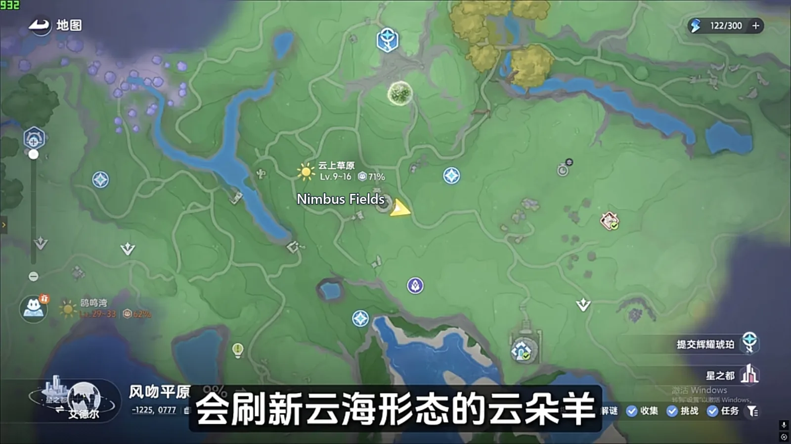
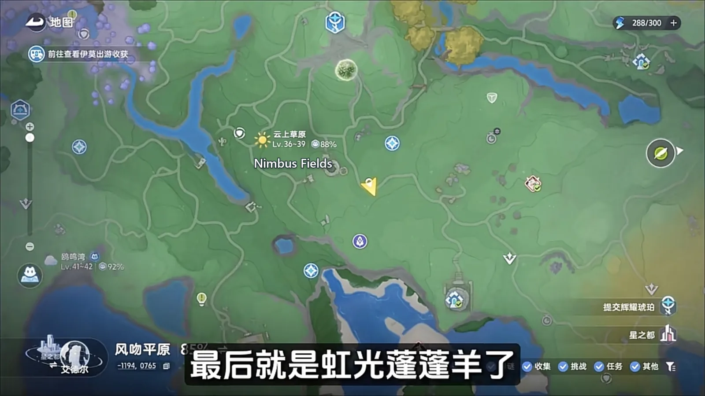

Home首页 / Guides攻略 / Nimbus Fields: Every Spawn Point, Walked in One Lap《全地图、全形态伊莫收集》：云上草原
Checked核对于 October 15, 20262026 年 10 月 15 日
Nimbus Fields: Every Spawn Point, Walked in One Lap《全地图、全形态伊莫收集》：云上草原
One lap of Nimbus Fields: six Aniimo fall at the waypoint, and the rest want a time of day, rain, or a Prismana unlock before they show up at all.云上草原一趟跑完：落地脚边就凑着六个图件，剩下的分别要切夜晚、要等下雨、要解锁虹光天气，一路往前不用回头。
The Aniimo of Nimbus Fields are not hard to catch. The trouble is that they are spread out, and that they pick their hours and their weather. This lap strings together the ones that fall at your feet the moment you land, the ones that only come out after nightfall, the ones the rain brings, and the one that waits on a Prismana unlock — in the order you walk them. In through the waypoint, on from there, then across to the far corner of the map: one pass forward, no doubling back, and the region's common forms and most of its register are done.云上草原的伊莫不算难抓，麻烦的是它们散得开，还挑时段和天气。这一条路线把落地就能碰上的、要切到夜晚才刷的、下雨打雷才冒头的、以及解锁虹光天气才会现身的，按走一趟的顺序串在一起。从传送点进去，一路往前走再折到地图另一头，不用来回绕路，一趟下来这片地区的常见形态和图件基本就齐了。

Down at the waypoint: six Aniimo in the first minute落在传送点，先收六个图件
Land at the Nimbus Fields waypoint and the first three are already around your feet — Emberpup (Fire · DPS), Flameruff (Fire · DPS) and Nimbi (Wind · Support). Drop into the gully below and Budclaw (Rock · Grass · Break) is hiding in it; two steps up the slope and Iris (Grass · DPS) and Chirpi (Wind · Support) turn up as well. Six register entries inside a minute, which is a good rate to open a region on.从云上草原传送点落地，脚边就凑着小炭犬（Emberpup，火 · 输出）、焚火狼（Flameruff，火 · 输出）和云朵羊（Nimbi，风 · 辅助），走过去就是三个图件。再往下进那条山沟，花芽蟹（Budclaw，土 · 草 · 击破）就藏在沟里；顺着坡往上爬两步，飘飘花（Iris，草 · 输出）和口哨鸥（Chirpi，风 · 辅助）也能撞上。一分钟拿到六个图件，起手这个速度很划算。
Below the underground palace: Flutternym in numbers, Hummin to wait for地宫下面：荧粉蝶多，走调草要蹲
Carry on down past the underground palace. Flutternym (Wind · Heal) turn up through this stretch in numbers, with a scattering of Hummin (Grass · Break) mixed in among them. Hummin has one bad habit: it burrows into the ground and disappears. When you cannot find one, go and stand in a patch where several have already shown up and wait for it to come back up.接着往地宫下面走。这一片荧粉蝶（Flutternym，风 · 治疗）数量不少，也混着少量走调草（Hummin，草 · 击破）。走调草有个毛病，爱往地底下钻，一下子找不到，就去走调草扎堆的地方蹲着等。

Switch the clock to nightfall and Sparki comes out切到夜晚，幽幽焰才出来
At this spot on the map, set the time to night and a crowd of small fireballs appears out of nowhere — this is where Sparki (Fire · Regen) spawns. Do not linger once they are caught: run straight for the cloud in front of you.地图上这个位置，把时间切到晚上，附近会一下冒出很多小火球，幽幽焰（Sparki，火 · 回能）就在这儿刷。抓完别停，直接往前面那团云里跑。

Into the cloud bank for the Cloudmist Form Nimbi钻进云团，收云海形态的云朵羊
Run into that bank of cloud. What spawns inside it is the Cloudmist Form of Nimbi (Wind · Support).跑进那块云团里，这里刷的是云海形态的云朵羊（Nimbi，风 · 辅助）。

Rain adds two more, and the two look almost alike下雨天多两只，长得几乎一模一样
Come through in rain or a thunderstorm and two more spawn around here: the Rainstorm Form of Nimbi and the Rainstorm Form of Turbo, both Wind · Support. The pair look almost identical at a glance and are easy to mix up — the difference is that Turbo is the larger body of the two.要是运气好，正好碰上下雨或者雷雨，这附近还会多刷雨天形态的云朵羊和蓬蓬羊。这两只长得非常像，一眼看过去容易混，区别在蓬蓬羊（Turbo，风 · 辅助）的体型更大一点。
The last stop: Prismana Form Turbo最后一站：虹光蓬蓬羊
Last is the Prismana Form of Turbo (Wind · Support), which spawns at a second spot on the map. It is not handed to you: unlock Prismana weather or a nature nurture at the Ley Tree first, or it never appears at all.最后是虹光形态的蓬蓬羊，落在地图上另一个位置。这只不白给，得先在地脉树那里把虹光天气或者自然生态解锁了，它才会出现。

The order to walk it in走一遍的顺序
Land at the waypoint and take the six register entries around your feet; carry on below the underground palace for Flutternym and Hummin; switch the clock to night for Sparki, then run straight into the cloud for the Cloudmist Form Nimbi; if rain or a thunderstorm rolls in, pick up the two rain forms on the way past; and finish at the far corner of the map, once Prismana weather or a nature nurture is unlocked, for the Prismana Form Turbo. The whole lap runs forward and never doubles back — the only thing you are waiting on is the weather and the clock agreeing with you.先从传送点落地，把脚边那一圈六个图件收掉；再往地宫下面走，收荧粉蝶和走调草；然后切到夜晚蹲幽幽焰，抓完就钻云团拿云海形态的云朵羊；碰上下雨打雷，顺手把雨天那两只羊也收了；最后回到地图另一头，等虹光天气解锁了再去收虹光蓬蓬羊。全程一路往前，不用回头，缺的只是天气和时段对得上。
More guides相关攻略
- The Argent Strait: Every Spawn Point, Walked in One Lap《全地图、全形态伊莫收集》：鸥鸣湾 — One lap of The Argent Strait: the region's Aniimo sit on a single line, Cornet only drops once every shell is open, and the weather and an unlock each gate one more.鸥鸣湾一趟跑完：这片图的伊莫基本挤在一条线上，贝壳全开小号鸥才下来，天气和解锁各管着哪几只。
- The Mistwoods: Every Spawn Point, Walked in One Lap《全地图、全形态伊莫收集》：迷雾森林 — Two passes of The Mistwoods: the waypoint and the deep wood on either side of the night switch, the walk out for the moth, the pup and the fish, and one Omega that stays put once its quest is done.迷雾森林两批收完：传送点和林子分白天夜里各扫一遍，出森林顺着溪水收掉蝶、犬、鱼，最后是一只做完支线才肯常驻的 Omega。